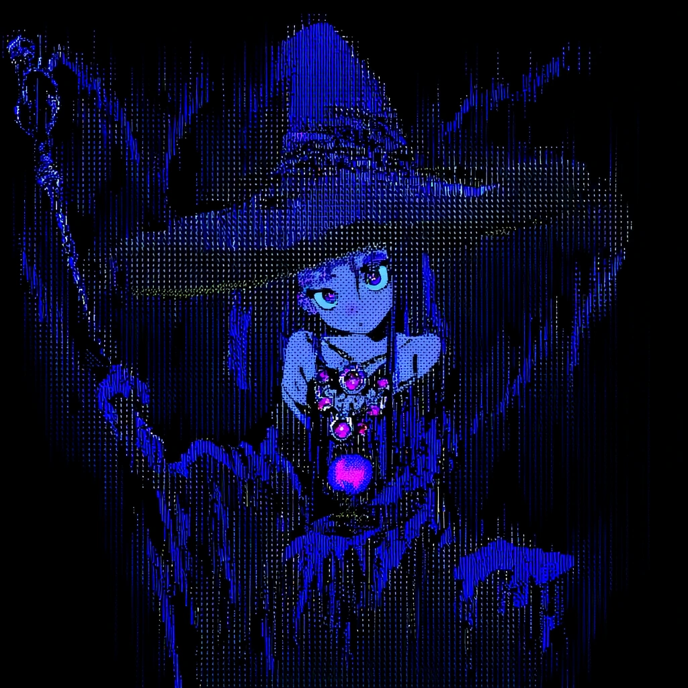

"폐광이나 북 검문소를 가는게 좋을 것 같은데" (의견을 묻듯 볼릭과 니콜라스를 쳐다본다)
오늘도 길드에서 의뢰를 확인하는 여러분. 의뢰 리스트는 5개 추가되었습니다. 볼릭 의뢰만 빼고 고를 수 있습니다,

구체적인 이유 : (국장님하고 저랑 합의가 시작도안됨ㅋㅋㅋㅋ)

역시 니콜라스의 시선을 사로잡는 건 도덴의 퀘스트인데


무합의 좋아해요
그냥 막 던지시면 받습니다
ㅠ
볼릭은 제외하구요
볼릭을 NPC 처럼 굴리시죠 ㅋㅋ
너무 깊은 곳이라서 무리려나

미식가 - Gourmand
피해: 3
(나중에 고칠란다
안식의 보살핌 - Restful Care
피해: 14

초반인데
의뢰 보수가 대포션이네
aid
피해: 5
(전혀 까먹고 있었어..!
rp로 풀어가죠. 저런 외적인 처리는 나중에합시다.
(폭군 드워프와 볼릭이 마주하는 장면을 상상합니다.)
"며칠 뒤에 봐도 의뢰가 남아 있을 것 같거든요.."
검은 숲이 나오는데 좀 더 위험한 곳으로 알려져 있습니다.
"조금 으스스한 기분이 드니 체온을 좀 높여주겠네" @Aid를 시전
"조금 더 먼 곳이라면 흥미가 있어요. 그 쪽 숲은 어떤 목재가 자랄지..."
"아이작... 이번엔 틀리지 않았군(볼릭을 힐끗 봄)"
"우리가 먼저 가서 기운을 정화해야겠지"
화살성채라던가 그런 곳 보다는 훨씬 가깝습니다
수정햇습니다
"엊그제 왔다구 엊그제!(10년 전)"
그러면 막 낄룩낄룩 매가 돌아오는게 보입니다
"어이 잠깐 이 앞은 당분간 봉쇄다"
"들어가려면 쉽지 않겠는데"
"될대로 되라고 뿌린 의뢰를 보고 사람이 온건가?
"이거 참 대단하군 반갑다고 말할 수 밖에"
막사를 너머 내부에 높은 사람이 서있는 곳으로 말이죠
그리고 그 안에는
이상할 정도로 레인저들인데 오와 열이 잘갖춰져 있습니다
그런 사람이 자리에 서있고
그 옆에는 좋은 옷을 차려입은 사람 한명이 앉아있습니다.
남자에 뿔에는 약간의 뿔이 돋아나있고
여러분은 그 때문에 그가 티플링의 혈통을 강하게 받았다는 것을 짐작할 수 있습니다
그러면 약간 화내듯이 볼릭에게 속삭입니다
"이 자식 여기가 어디라고, 예의를 갖추지 않으면 진짜 죽어.."

"뭐하고 있느냐, 너희들 스스로를 소개하지 못할까?"
"웃으면서 일해야지! 웃으면서!"
"그런 분이 지금 말하는걸 허가해줬는데 고마음을 표하는게 먼저인게 상식임을 모르느냐!"

(ㅋㅋ
"아버지께서도 그걸 원치는 않겠지"
"그래 자네.. 이름이 뭐지?" 라며 니콜라스를 가르킵니다
"모험가 길드가 있는 이 지역에 있는 마을이라면 모든 곳에 사람을 구하는 소식을 올렸지"
"그래서.. 그 의뢰를 누가 냈다고?"
@ 잘못 말하면 분위기 망칠까봐 입을 다뭄
"너희들의 의뢰주는 아이작따위가 아니다"
"바로 카시안 가문이지!"
"지금은 사안이 더 심각하고 위험해졌네"
"그래서 현 시간부로 의뢰 비용은 150gp가 아니라. 300gp로 변경되었네."
"우리는 그것을 추울 이라고 부른다네"
"기괴하고 뒤틀린 해그들의 이해할 수 없는 주문에 의해서 말이야."
"해그의 집은 불태웠지만... 해그를 마주한 건 아니었거든요."
아는 존재라 해도 되는 것인지
커다란 마녀 공동체가 있고
그런 식이라면 아는 사람이 되지 않을까요
하지만 해그에 대해서 박식하지 않을 앨리안이 그에 대해서 빠삭하게 아는 부분은 어쩌면 이상하게 보일 수도 있겠습니다
"자네들이 이 탐사를 만약에 할 생각이라면"
"막사에서 모른다나를 찾는게 좋을거같군. 그녀라면 더 나은 이야길 해줄테니"
@ 다 들리게 암기중
그러면 그곳에는 한 여성이 부상자들을 돌보는게 보입니다.
"모르가나! 앨리엇이 보내서 왔다네!"

라고 말하다가 할다론을 보고 살짝 당황합니다.
".... 말하고 느낀 바는 알겠지만.. 그런 이유는 아니야.."
라며 레인저들이 앞으로 나옵니다
"납득할 만한 설명을 하는게 좋을 거야"
옛날연인?!
"할다론 씨..."
(한숨과 함께 머리 위로 든 손을 내립니다.)
"내가 죽인 사람 만큼, 병든 자를 치유하고.."
대부분의 정보 제공자는 그녀임이 틀림없습니다
할다론 앞에 작은 사람 그림자가 나타나더니 당신의 무릎을 향해서 주먹을 휘드릅니다
그러면 꾸죄죄한 꼬마 한명이 무표정으로 당신의 무릎을 주먹으로 치고 있습니다 힘이 그렇게 있어보이진 않네요
전혀 모르는 사람입니다
"그만해"
@라고 하며 부상자들을 함께 살펴보려 합니다
"추울로 만드는건 아마 그녀의 주술일 가능성이 높겠지."
"너도 알다시피 그녀는 정신을 혼미하게 만드는 주술을 사용해. "
"주문의 잔향을 두르고 다닐테니까"
살려주세요
rp가 너무 오래걸리는 것같아서
걱정이 많습니다...
어흑ㅠㅠ 최대한 빠르게 해볼게요
pc적으로 막사의 유일한 치유사가 아니었음 냅다 공격했을지도 모름이...너무 무섭고요...
그 그렇게까지 해도 된다고요
공교롭게도 그 존재는 물가에서도 살 수 있으며 마법을 감지할 수 있습니다
여러분
이미지 하나 띄웁니다
은근 귀여워요
"내 제자를 동행시키지"
라며 페리를 가르킵니다

어쩔 수 없을 때는 어쩔 수 없으니 충분한 시간을 가지시죠!
이제 맵이 너무 많아서
맵찾는데 한나절이네용
사실 그런 느낌을 좀 고려했습니다
뭐든 재밌습니다
저였으면 냅다 공격부터날렸을거같긴해요
사실 저도 현장에서 합의봐야할게 대부분이기 떔에
ㅋㅋㅋ..
일단 던지고 합의는 나중에 하는 방향으로
과감하게
실제로 뭐라 하는게 아니라 맞춰서 대사치는거니까 염려마셔요 ㅋㅋ
그 마법사들 설정이
마법 배워서 전부 성형 마법으로
예쁘게 하고 돌아댕긴단 설정이라
마법 배워서 자기가 몸을 아예 변형시키는 장면이 나옴
본판이 에텔일지 우찌 알아요ㅋㅋㅋㅋ
선빵에 근거가 하나 생겼네요
비전학
17
그리고 어디까지 향하자. 그곳에는 시체들이 보입니다. 시체들은 난도질당해서 조각조각 나있씁니다
모든 시체가 머리만 안보입니다.
그러면 시체에서 집게발의 흔적이 느껴집니다. 그리고 묘한 마력의 잔향이 느껴집니다.
책산다는게
룰북 이야기가 아니었어요?
그런 느낌으로
(비전학) 이거는 안돼고
가령
(왈든의 역사와 민속) 이러면 관련 내용에 보너스 받는
그런 느낌으로
비전학
14
그러면.. 분명 시아실은 정신에 영향을 끼치는 주술을 사용한다고 했는데
그녀가 사용하기엔 이 흔적이 지나치게 폭력적이고 잔인하단 느낌이 듭니다.
일단 여러분은 이 마법의 흔적을 추격해볼 수 있겠군요
"아니면 더 살펴볼 거라도 있는겐가"
"이 시체들을 보고 있자니... 방치해둘 순 없을 것 같아요."
"서두릅세"
최고
이건 길잡이 역할 한 사람만 가능하고

갈대와 늪의 정령이 깃든 부적. 착용자는 습지에서 미끄러지듯 움직인다. 활성화(하루 1회). 행동으로 10분 동안 다음 중 하나를 얻는다 — (1) 비마법적 늪/진흙 어려운 지형 무시, 또는 (2) 습지에서의 은신 또는 생존 판정에 이점.
뭘까
Guidance
생존술
24
할다론의 조력아래에 볼릭은 흔적을 되짚습니다. 그러면..
"고맙네!"
"다른 녀석이 더 있는지는 아직 잘 모르겠군"
"만약 다른 녀석들이 있다면"
확인해볼 수 있을까요
@ 품을 뒤적이며 먹을게 있다면 건냅니다
가까이가서 확인해보면 더 잘보일 것 같습니다. 다만 그러면 다가가는 리스크를 감수해야할 것 같습니다
괴물은 어딘가로 향하고만 있고 그 이상은 보이지 안흣ㅂ니다
뚜벅 뚜벅 걸어만 가고 있습니다

이걸로 원거리에서 체크 안되나요?
경이로운 물건, 비범 이 수정 렌즈는 눈 위에 맞습니다. 착용하는 동안 시각에 의존하는 지혜 (지각) 판정에 유리를 얻습니다. 시야가 맑은 조건에서, 2피트 너비만큼 작은 생물과 물체의 세부 사항을 훨씬 먼 거리에서도 볼 수 있습니다.
기습...기습...아 얼굴을 겨냥해서 쏠 수 있을까요
도구로 해결방법을 찾다니
죄송
멀리서 확인하기 힘들다 라는 조건을 불리점의 환경 조건으로 두겠습니다
Guidance
감지
27
(이거 볼릭이 걸어준 건줄;;)
시체를 기워만든
그런 사악한 제작품입니다
Hunter's Mark
장궁
Giant ZombieGiant Zombie AC: 14
피해: 6 + 6
(읍)
@ 깜짝 놀라 자신의 소리가 괴물에게 들렸는지 쳐다봅니다
장궁
Giant ZombieGiant Zombie AC: 14
피해: 4 + 4
Eldritch Cannon
시작하겠습니다!
하하 기습라운드는 아닙니다 이니셔티브로 이겨서
당당하게 기습하시죠!
니콜라스 크라프트 우선권
4
할다론 미스바르 우선권
15
볼릭 모스비어드 우선권
12
Eldritch Cannon 우선권
5
Giant Zombie 우선권
18
글렌(볼릭) 우선권
5
페리 신 우선권
19
Bless
기회하게 입이 쫙하고 벌려집니다
건강 내성
23
건강 내성
15
건강 내성
11
Toxic Exhalation
DC 14 : 내성 굴림 : 내성 굴림 : 내성 굴림
피해: 18

(ㅋㅋㅋ
(또 이미지로 뜨기시작하네

봉 Shillelagh
Giant ZombieGiant Zombie AC: 14
피해: 4
True Strike
Repeating Shot 권총
Giant ZombieGiant Zombie AC: 14
피해: 6
니콜라스의 탄이
그 몸에 닿자 신체가 녹아버리는게 보입니다
Force Ballista
Giant ZombieGiant Zombie AC: 14
피해: 11
Radiant Flame
Giant ZombieGiant Zombie AC: 14
Toxic Exhalation 재충전
3
볼릭을 찢으려고합니다
Pincer
Giant ZombieGiant Zombie AC: 14
Pincer
Giant ZombieGiant Zombie AC: 14
@ 겨우 피해냅니다
Faerie Fire
DC 13 : 내성 굴림
Produce Flame
통찰
19
Force Ballista
Giant ZombieGiant Zombie AC: 14
피해: 13
(이미 맞았으니
True Strike
Repeating Shot 권총
Giant ZombieGiant Zombie AC: 14
피해: 15
할다론 미스바르 우선권
4
금방 끝난건 그냥 운이다
대단했다
그리고 그것이 시체들을 회수해가지고 가던 곳은...
@ 따라갑니다 "어서 갑세!"
꽃을 형상화해놓은 그 오브제 위에는 목없는 시체가 박혀있습니다 마치 장식된 것 같이
건강 내성
7
"흐갹!!"
건강 내성
4
Guidance
통찰
14
통찰
19
보너스 행동으로 쓸 수 있는게 있어서요
공격 성공해야지만 가능한...
장궁
Eldritch CannonEldritch Cannon AC: 18
니콜라스 크라프트 우선권
5
볼릭 모스비어드 우선권
16
지혜 내성
7
Eldritch Cannon 우선권
17
페리 신 우선권
20
페리 신 우선권
11
글렌(볼릭) 우선권
9
Bullywug Warrior 우선권
5
Bullywug Warrior 우선권
21
Bullywug Warrior 우선권
3
Bullywug Warrior 우선권
6
Bullywug Warrior 우선권
15
Hunter's Mark
꾸륵 꾸륵 소리와 함께 무언가가 연못과 정원에서 튀어오릅니다
Leap
Insectile Rapier
니콜라스 크라프트니콜라스 크라프트 AC: 14
피해: 7 + 3
Shield
민첩 내성
9
Faerie Fire
DC 13 : 내성 굴림 : 내성 굴림 : 내성 굴림 : 내성 굴림
건강 내성
20
Necrotic Ray
볼릭 모스비어드볼릭 모스비어드 AC: 16
피해: 16
건강 내성
20
그걸 맞다 몸이 썩어문드러집니다
"이러면 목욕을 해야한단 말이다! 물도 없는 동네에서!"
뭐여 방금 그게 마지막이었네 ㅋㅋ
Radiant Flame
Bullywug WarriorBullywug Warrior AC: 15
피해: 7
Radiant Flame
Bullywug WarriorBullywug Warrior AC: 15
Leap
Insectile Rapier
Eldritch CannonEldritch Cannon AC: 18
피해: 8 + 4
저 개구리한테 징벌의 표식 쓸게요
징벌의 표식 - Mark of Retribution
DC 13 : 내성 굴림
피해: 5
건강 내성
22
Thunderwave
DC 14 : 내성 굴림 : 내성 굴림 : 내성 굴림 : 내성 굴림
피해: 10
장궁
Bullywug WarriorBullywug Warrior AC: 15
피해: 11 + 6
Flame Thrower
DC 14 : 내성 굴림
피해: 10
Leap
Insectile Rapier
할다론 미스바르할다론 미스바르 AC: 15
피해: 9 + 2
12뎀 미만이면 수리 가능;;
(근데 할다론 보정치가 +7이라..
(뭔진 몰라도 성공했으면 크랙플레이죠
샤프슈터 있으면 문제 없을거에요
Insectile Rapier
볼릭 모스비어드볼릭 모스비어드 AC: 16
Insectile Rapier
Eldritch CannonEldritch Cannon AC: 18
피해: 10 + 4
Hunter's Mark
장궁
Bullywug WarriorBullywug Warrior AC: 15
피해: 8 + 3
(그냥 힐링 워드
Healing Word
피해: 8
봉 Shillelagh
Bullywug WarriorBullywug Warrior AC: 15
피해: 5
망토를 낀 개구리가
두 손으로 마법의 힘을 모으더니
그대로 그 주문의 힘을 볼릭에게 발사합니다
건강 내성
7
Necrotic Ray
볼릭 모스비어드볼릭 모스비어드 AC: 16
피해: 22
건강 내성
9
Leap
Mace
Bullywug WarriorBullywug Warrior AC: 15
Insectile Rapier
Eldritch CannonEldritch Cannon AC: 18
저게 낫겠지요
Mend Cannon
피해: 8
(저번부터 2번 뜨더라구요
Flame Thrower
DC 14 : 내성 굴림
피해: 12
Insectile Rapier
할다론 미스바르할다론 미스바르 AC: 15
지혜 내성
14
지혜로워
f5했음
봉 Shillelagh
Bullywug WarriorBullywug Warrior AC: 15
날립니다!
Necrotic Ray
볼릭 모스비어드볼릭 모스비어드 AC: 16
Leap
Mace
Bullywug WarriorBullywug Warrior AC: 15
피해: 3 + 1
개구라를 내려찍습니다
Protector
피해: 12
True Strike
Repeating Shot 권총
Bullywug WarriorBullywug Warrior AC: 15
(엄청나군
"상처가 너무 심하세요."
Cure Wounds
피해: 15
Mend Cannon
피해: 12
밖에 나가서 시아실의 머리를 회수해오겠습니다
Identify
누군지는 몰라도 그 목걸이를 통해서 죽은 자.. 정확히는 그 시체와 대화를 나누고 있던거같습니다
"더는 이 곳에 있고 싶지 않군!"
비전학
20
하지만...
이미 뜯어져서 분리가 된 것
수복할 필요가 있겠군요
이것은..
"너를 죽인 자가 누구지?"

위버 툴
이게 제일 어울리겠군요

엇
어?
(그리고 심지어 니콜라스는 위버 툴 숙련이 있다...)
히트 다이스
9
Short Rest (1 Hour)
1
안식의 보살핌 - Restful Care
피해: 11
머리를 다시 시체에
바느질해서 기워놓습니다
자 굴려주세요
Weaver's Tools
11
(못붙어요
(안타깝게도
그러면...
"죽음 넘어 역시 자연의 섭리니까요.."
모른다나가 왜 자신을 죽인건지 아냐고 묻어보고 싶은데 다른분들은
마법학 굴려봅시다
시체의 모습이 보입니다

비명을 지르며 목소리가 들립니다
"나를 또 죽였어.."
(화이팅
"나를 죽인 자.."
"그 녀석.. 마녀.. 모른다나!!!"
"하지만 목적은.. 뭔가를 찾는 것으로 보였어. "
별다른 액션을 취하고있지않습니다
"모른다나가 누구인가?"
"그 있잖아요! 아까 할다론 씨랑 심상치 않았던 치유사!"
"당연히 거짓말이지...."
뭔가
물어보지도 않은 질문에 답하기 시작합니다
"너희들 내 부탁하나만 들어주지 않을래?"
"나를 부활시켜주면...."
까지 말하고 목이 잘립니다
"어서 돌아갑세!"
(내비두고 복귀하나요?)
방금 마녀를 전력으로 지키려고 했던 자들도 보입니다
그러면 그것을 보고 충격먹은듯이
앨리안이 비틀거리면서
여러분에게 다가옵니다
"......"
"그 마녀에게 모두 속아넘어갔군"
".... 큰일이 났네"
".. 코린트의 유물은 카시암 가문 사람만 알고 있는 비밀이지"
"그것은.. 바로 8년 전 전투에서 쥬덴이 사용한 무기."
"그것이 봉인되어있었네"
그러면 뭔가 안좋은 일 , 비상사태가 터졌음을 암시하며 오늘 세션은 여기까지!!!!!!!!!
ㅋㅋㅋ
갠차나요
빠른 디코!